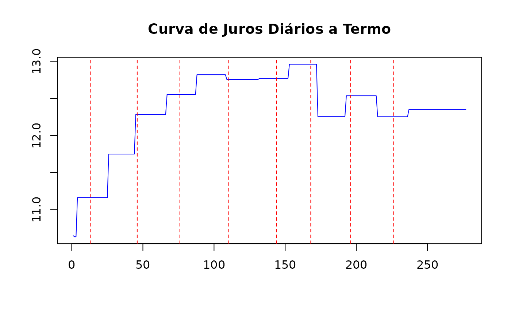

flatforwardCOPOM-pt.RmdO objetivo deste artigo é apresentar uma metodologia para a interpolação de uma curva de juros considerando as datas de reuniões do Comitê de Política Monetária (COPOM) como vértices e consequentemente o seu efeito nas taxas de juros de 1 dia a termo.
A estrutura a termo de juros prefixados utilizada no Brasil se apresenta de duas formas, sem caixa e com caixa, a primeira é formada com base nos contratos futuros de Taxa DI (DI1) negociados na B3. A segunda versão pode ser extraída dos títulos públicos prefixados, negociados no Tesouro Direto e que têm preços de referência divulgados na ANBIMA. A versão mais utilizada é a sem caixa, formada a partir dos contratos futuros de DI1. Dessa maneira, os vértices da curva correspondem aos vencimentos dos contratos futuros.
O método de interpolação flat-forward (Hagan and West 2006) é comumente utilizado para interpolar a curva de juros prefixados, e a interpolação é realizada a partir dos vencimentos dos futuros. Entretanto, na parte curta da curva, tipicamente dentro do primeiro ano, a dinâmica dos juros é determinada pelo COPOM. No gráfico abaixo temos um histórico da taxa de juros SELIC Meta definida pelo COPOM. O histórico vai de fevereiro de 2021 a fevereiro de 2022 e compreende 8 reuniões do comitê. No gráfico a taxa de juros SELIC Meta definida está em azul e as datas das reuniões são representadas pelas linhas tracejadas em vermelho. Observando o gráfico com a SELIC Meta fica evidente que a dinâmica das taxas de juros de curto prazo é determinada pelo COPOM.
library(flatforwardCOPOM)
refdate <- as.Date("2021-02-01")
seta <- rbcb::get_series(c(SELIC = 432),
start_date = refdate,
end_date = "2022-02-23"
)
du <- bizdays(refdate, seta$date, "Brazil/ANBIMA")
plot(du, seta$SELIC,
type = "l", col = "blue",
xlab = "Dias úteis", ylab = "Taxa de Juros (%)",
main = "Taxa de juros - Meta Selic definida pelo Copom"
)
dates <- get_copom_dates("2021-02-01", 8)
copom_du <- bizdays(refdate, dates, "Brazil/ANBIMA")
abline(v = copom_du, lty = "dashed", col = "red")Taxa de juros SELIC Meta.
O COPOM reune-se periodicamente para definir o nível da taxa SELIC que por sua vez influencia a taxa DI, utilizada no mercado interbancário. Dessa maneira, é esperado que esta taxa DI mude de nível após as reuniões do Comitê. Contudo, aplicando a interpolação flat-forward a curva de juros com vencimentos dos futuros e calculando as taxas a termo de 1 dia, observa-se que as mudanças de nível nas taxas de juros, geradas pela interpolação, ocorrem após cada vértice de vencimento de futuros. Portanto, temos que, para o curto prazo, a interpolação cria um comportamento diferente do que é observado. Assim, é necessário realizar uma interpolação flat-forward, para a parte curta da curva, considerando as reuniões do COPOM (Carreira and Brostowicz Jr 2016), fazendo com que as taxas de juros a termo fiquem constante entre as reuniões.
Vamos construir um exemplo com a curva de juros prefixados para a data de referência 23/02/2022. Neste exemplo vamos construir uma estrutura a termo de juros a vista (classe spotratecurve) e definir a interpolação flat-forward para essa curva. Em seguida vamos calcular as taxas de juros a termo de 1 dia e visualizar em um gráfico as mudanças de nível nas taxas a termo junto com as datas de reuniões do COPOM.
library(fixedincome)
refdate <- as.Date("2022-02-23")
terms <- c(1, 3, 25, 44, 66, 87, 108, 131, 152, 172, 192, 214, 236, 277)
rates <- c(
0.1065, 0.1064, 0.111, 0.1138, 0.1168, 0.1189, 0.1207, 0.1219,
0.1227, 0.1235, 0.1234, 0.1236, 0.1235, 0.1235
)
curve <- spotratecurve(
rates, terms, "discrete", "business/252", "Brazil/ANBIMA",
refdate = refdate
)
interpolation(curve) <- interp_flatforward()Aqui criamos a estrutura a termo e abaixo construímos o gráfico com as taxas de juros a termo de 1 dia (linha azul) e destacamos as datas de reuniões do comitê (linhas pontilhadas em vermelho).
fwd_curve <- curve[[1:277]] |> forwardrate()
plot(1:277, fwd_curve * 100,
type = "l", col = "blue",
xlab = "Dias úteis", ylab = "Taxa de Juros (%)",
main = "Curva de Juros Diários a Termo"
)
dates <- get_copom_dates(refdate)
copom_du <- bizdays(refdate, dates, "Brazil/ANBIMA")
abline(v = copom_du, lty = "dashed", col = "red")
No gráfico observa-se que as mudanças de nível das taxas a termo ocorrem entre duas reuniões, o que sabemos que não é o comportamento esperado para taxas no curto prazo. Em alguns casos, entre as duas primeiras reuniões, temos duas mudanças de nível entre as reuniões.
Dessa maneira buscam-se formas de realizar uma interpolação que, na parte curta da curva, as taxas a termo apresentem mudança de nível apenas nas reuniões do comitê.
Vamos considerar as reuniões que acontecem no horizonte de um ano nesta abordagem, e dado que estas reuniões acontecem a cada 45 dias, aproximadamente, teremos 8 reuniões em média neste intervalo.
Esta metodologia foi abordada em (Carreira and Brostowicz Jr 2016), onde os contratos futuros são considerados da curva de juros a interpolação considerando as reuniões se baseia nas relações de não arbitragem das taxas a termo e (Varga 2020) utiliza contratos de títulos públicos prefixados em um processo de otimização que visa minimizar o erro no apreçamento destes contratos utilizando uma estrutura a termo que apresenta mudança de nível nas reuniões.
O objetivo aqui é trazer a implementação destas abordagens, trazendo a luz as peculiaridades que se apresentam e as eventuais alternativas para contorná-las.
Na próxima sessão será apresentada a metodologia de interpolação flat-forward e a extensão que considera as reuniões do COPOM, os casos particulares e as alternativas de solução. A sessão seguinte aborda o processo que minimiza do erro de apreçamento dos títulos públicos e adicionalmente submete-se a este processo os contratos futuros, com o objetivo de comparar com a metodologia anterior. No fim temos a comparação dos resultados das diferentes abordagens e a conclusão.
A interpolação flat-forward considera que a taxa a termo entre dois vértices é constante, por isso flat-forward.
Sejam os vértices \(t_1\) e \(t_2\) (\(t_2 > t_1\)) com as respectivas taxas de juros a vista \(r_1\) e \(r_2\). A taxa de juros a termo \(r_{12}\) entre os vértices \(t_1\) e \(t_2\) é obtida da equação:
\[ (1 + r_{12})^{t_2 - t_1} = \frac{(1 + r_{2})^{t_2}}{(1 + r_{1})^{t_1}} \]
De acordo com essa abordagem, para se obter uma taxa a vista \(r\) em um vértice \(t\), tal que \(t_1 < t < t_2\), considera-se a composição da taxa a vista em \(t_1\) com a taxa \(r_{12}\) entre \(t_1\) e \(t\).
\[ (1 + r)^t = (1 + r_{2})^{t_2} (1 + r_{12})^{t - t_1} \]
consequentemente
\[ r = \left( (1 + r_{2})^{t_2} (1 + r_{12})^{t - t_1} \right)^{\frac{1}{t}} - 1 \]
Seguindo essa metodologia, o valor das taxas a termo de 1 dia entre os vértices \(t_1\) e \(t_2\) é \(r_{12}\), uma vez que:
\[ (1 + r_{12})^{t_2 - t_1} = \prod_{i = t_1}^{t_2} (1 + r_{12}) \]
O desafio aqui é construir uma interpolação flat-forward entre as datas do COPOM que, de preferência, mantenha as taxas a vista nos vencimentos dos futuros. De forma que o valor obtido dessa nova interpolação nos vencimentos dos futuros seja igual, ou muito próximo, às taxas a vista dos futuros. Veremos que não é possível garantir isso para todos os vértices e para lidar com estes casos particulares seram propostas diferentes abordagens cada uma com sua motivação.
Para construir uma interpolação flat-forward entre as reuniões do COPOM será proposta uma metodologia que reconstroi a estrutura a termo a vista compondo as taxas a termo de 1 dia. Dessa maneira a estrutura a termo é construída a cada reunião considerando as taxas compostas até a última reunião. Na próxima sessão será abordada a construção dessa interpolação trecho a trecho começando pela taxa DI de 1 dia até a última reunião considerada no horizonte de análise.
Tudo começa na taxa DI de 1 dia que é divulgada diariamente pela B3. A Taxa DI é influenciada pela taxa SELIC e esta é definida pelo COPOM. Essa afirmação traz uma importante hipótese, a de que as mudanças de nível na Taxa DI acontecem após as datas de reunião do COPOM.
Partindo de uma data referência, que tem uma taxa DI definida, consideramos que esta taxa DI se mantém constante até a primeira reunião do COPOM. Assim, um contrato futuro de DI1 com vencimento entre a data de referência e a primeira reunião já tem o seu preço de liquidação definido pela taxa DI corrente. De outra forma, um contrato futuro de DI1 com vencimento após a primeira reunião terá o seu preço de liquidação influenciado pelo resultado desta reunião. Vamos considerar \(r_t\) é a taxa DI em um instante \(t\), \(t_0\) o instante inicial, \(T_1\) é o vencimento do primeiro futuro e \(t_1\) é a primeira reunião. A taxa DI deve para o primeiro futuro de DI1 é a composição da taxa corrente até a primeira reunião com a nova taxa da reunião até o vencimento do primeiro futuro.
\[ (1 + r_0)^{t_1 - t_0} (1 + r_0 + m_1)^{T_1 - t_1} \]
onde \(r_0\) é a taxa DI corrente e a nova taxa é a soma da taxa corrente com o choque \(m_1\) introduzido na primeira reunião. Essa composição de taxas deve ser igual a taxa a vista negociada no futuro de DI1 que vence em \(T_1\). Dessa maneira, é possível determinar o choque implícito \(m_1\).
De acordo com o que acabamos de descrever, para a construção da estrutura a termo de juros, a constução das taxas a vista é realizada pela composição das taxas a termo de 1 dia, assim, temos que até a primeira reunião a taxa a termo de 1 dia é \(r_0\) e após a primeira reunião a taxa é \(r_0 + m_1\). Esta segunda taxa permanece constante até a segunda reunião e influencia os contratos futuros com vencimento entre a primeira e segunda reuniões.
Como acabamos de ver, a taxa a termo de 1 dia até a segunda reunião é dada por \(r_0 + m_1\). Para determinar \(m_2\), o choque da segunda reunião, utilizamos o primeiro futuro com vencimento em \(T_2\), após a segunda reunião, em \(t_2\). Realizamos a composição das taxas a termo de 1 dia considerando as duas reuniões e o vencimento do futuro em \(T_2\).
\[ (1 + r_0)^{t_1 - t_0} (1 + r_0 + m_1)^{t_2 - t_1} (1 + r_0 + m_1 + m_2) ^ {T_2 - t_2} \]
Essa composição de taxas deve ser igual a taxa a vista negociada no futuro de DI1 que vence em \(T_1\) e assim obtem-se \(m_2\).
Para as demais reuniões adota-se o mesmo procedimento. Determinar o choque \(m_i\) da i-ésima reunião através da composição das taxas a termo de 1 dia até o vencimento do futuro em \(T_i\), que é o vencimento do primeiro futuro após a i-ésima reunião.
\[ (1 + r_0)^{t_1 - t_0} \prod_{i=1}^n (1 + r_0 + \sum_{j=1}^{i} m_j)^{t_{i+1} - t_i} (1 + r_0 + \sum_{j=1}^{n} m_j) ^ {T_n - t_n} \]
Até aqui, consideramos o primeiro futuro após uma reunião para encontrar uma estimativa para o choque votado na reunião do COPOM. Essa abordagem funciona bem quando há apenas 1 futuro entre duas reuniões, pois dessa forma a taxa desse contrato é suficiente para definir o choque da reunião que antecede o futuro. Entretanto, é comum encontrarmos dois futuros com vencimentos entre duas reuniões e nestes casos há 4 possibilidades:
Escolher entre o primeiro e o segundo futuros não muda a construção da composição das taxas a termo de 1 dia. Esta escolha se deve ao fato de que, quanto mais próximo de uma reunião, o primeiro futuro é menos influenciado pelo choque provocado na reunião. Esta menor influência ocorre por que o período de composição da nova taxa é de poucos dias, diferente do segundo futuro quem tem mais 1 mês de composição pela frente. Por esse motivo, quanto há 2 futuros vencendo entre duas reuniões, o segundo futuro é a escolha mais adequada.
Adicionalmente, considerando a relação de não arbitragem no apreçamento dos futuros, temos que a taxa a termo entre os 2 futuros deveria ser igual a taxa a termo entre as duas reuniões. O FRA formado pelos 2 futuros, compra do curto e venda do longo, pode ser descrito como:
\[ \frac{N f_{cl}}{(1 + r_l)^{T_l}} \]
onde $f_{cl} é a taxa a termo entre os futuros, \(r_l\) é a taxa a vista do futuro longo, \(T_l\) é o vencimento do futuro longo e \(N\) o valor nominal. Essa fórmula mostra como o apreçamento do FRA depende da taxa a termo, que por sua vez depende do choque da reunião prévia. Todavia, o fator de desconto do FRA depende da taxa a vista do segundo vencimento, que é mais influenciado pelo choque. Esta alternativa é interessante em alguns casos, contudo, pode apresentar distorções como choques que muito fora das expectativas.
A última alternativa sugere o uso de otimização para encontrar o choque
Carreira, Marcos CS, and Richard J Brostowicz Jr. 2016. Brazilian Derivatives and Securities: Pricing and Risk Management of Fx and Interest-Rate Portfolios for Local and Global Markets. Springer.
Hagan, Patrick S, and Graeme West. 2006. “Interpolation Methods for Curve Construction.” Applied Mathematical Finance 13 (2): 89–129.
Varga, Gyorgy. 2020. “On the Fitting of the Term Structure Short-End.” https://www.youtube.com/watch?v=YfQ9hBlcGxk.